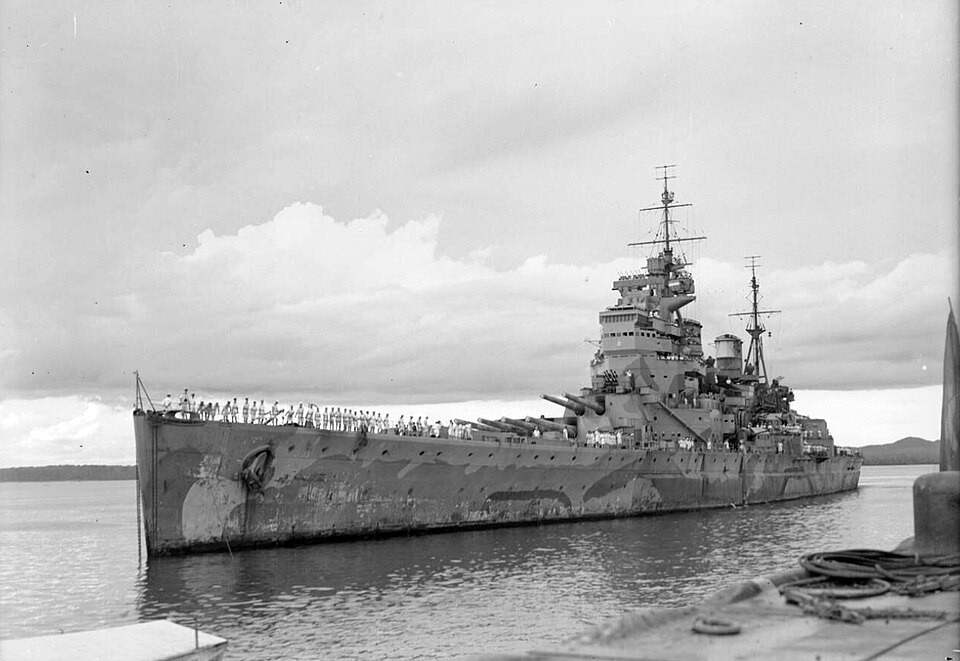

HMS Prince of Wales
Acorazado de Reino Unido, perteneciente a la clase King George V. Combatió contra el Bismarck y el Prinz Eugen en el estrecho de Dinamarca cuando todavía arrastraba dificultades de una unidad recién incorporada.

Diseño y función
HMS Prince of Wales pertenecía a la clase King George V. Acorazado de flota y cobertura de fuerzas de superficie. Sus prestaciones se detallan en la tabla técnica, con las fechas o condiciones disponibles en la referencia.
Operaciones y trayectoria
Combatió contra el Bismarck y el Prinz Eugen en el estrecho de Dinamarca cuando todavía arrastraba dificultades de una unidad recién incorporada. Más tarde fue enviado al sudeste asiático como parte de la Fuerza Z.
Destino final y conservación
Hundido por la aviación japonesa frente a Malaya el 10 de diciembre de 1941, junto al crucero de batalla Repulse.